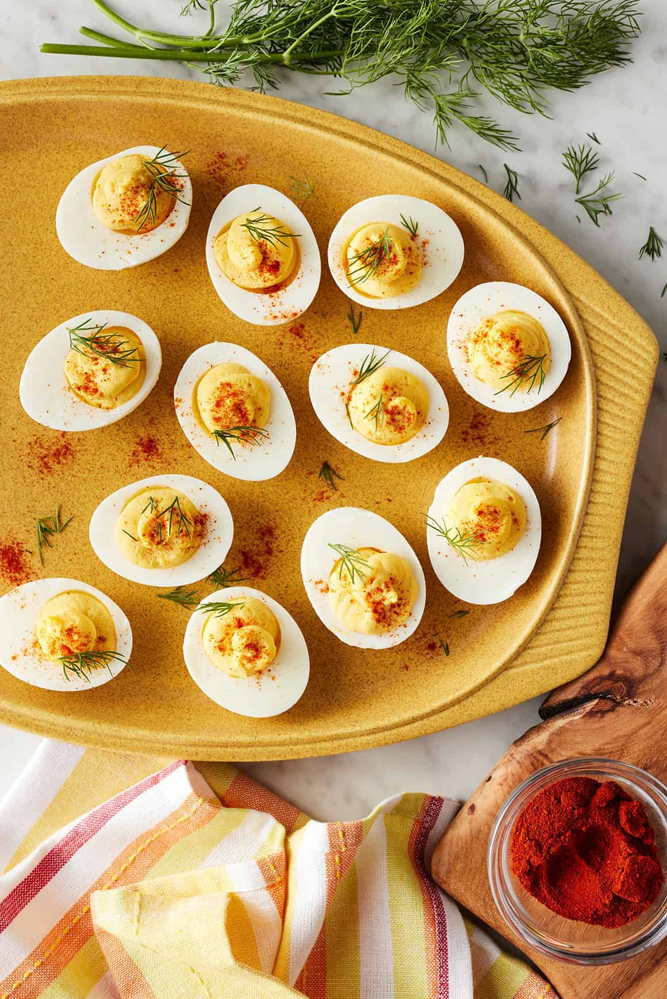

Whether you're hosting a holiday shindig, tailgating, or having a few friends over for dinner, appetizers set the tone. We're here to help you get it right.
Description: Our first contender for Top-Notch Apps was the Sausage and Cream Cheese Pinwheels, which have a 4.8 star-rating with 68 comments. McLaughlin described this dish as "salty and tangy," but wished there was more cream cheese. Our second challenger was the Easy Lemon-Pepper Chicken Wings, with a 4.7 star-rating and 69 comments. Hall called these wings "heaven."